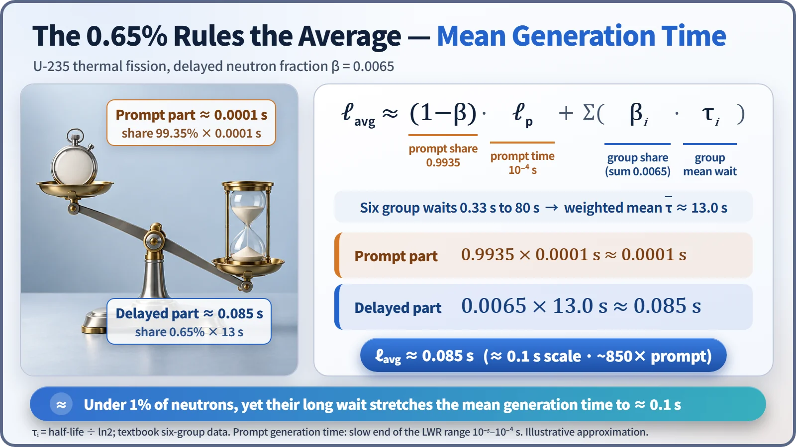
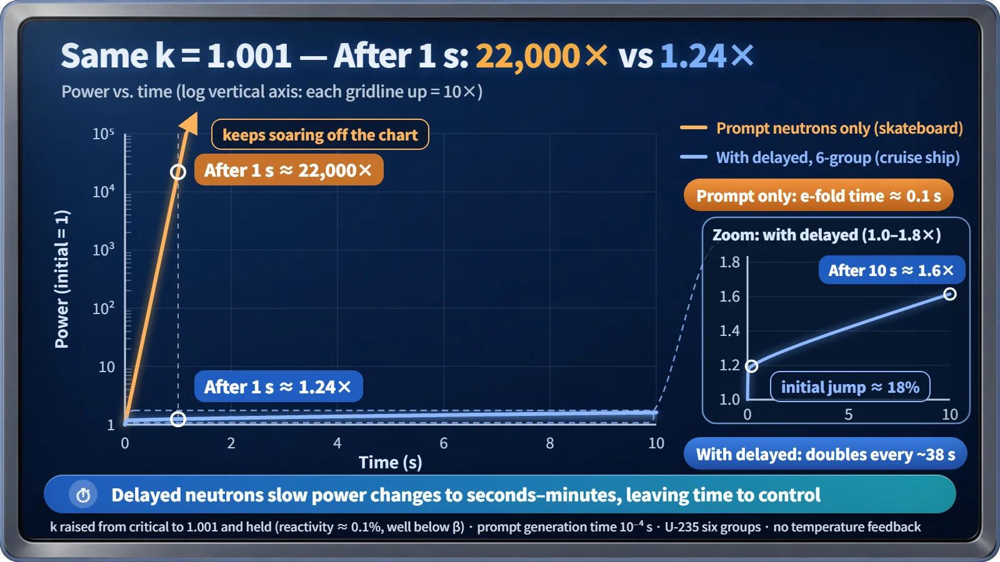

Nuclear Reactions & Fission · 038
A Cruise Ship, Not a Skateboard — Why Delayed Neutrons Make Reactor Control Possible
With prompt neutrons alone, a 0.1% excess would multiply power about 22,000-fold in one second. Delayed neutrons cut that to about 1.2-fold.
Only about 0.65% of fission neutrons are delayed, but they stretch the mean time between neutron generations from about 0.0001 second to about 0.085 second. That turns power changes that would take a fraction of a second into changes that take tens of seconds to minutes, which is what makes a reactor controllable. [1]
Erase the delayed neutrons, and what happens in one second?
Start with a thought experiment: what if we could wipe out only the "late" neutrons in a reactor?
Neutrons from fission come in two kinds. More than 99% are prompt neutrons, which burst out at the instant of fission. About 0.65% are delayed neutrons, which emerge seconds to tens of seconds later, after a fission fragment has gone through beta decay.
The key is the generation time: the average time from a neutron's birth until it is absorbed by another nucleus and triggers the next fission. Counting prompt neutrons alone, that time in a light-water reactor is only about 10⁻⁵ to 10⁻⁴ seconds. [1]
Now imagine the neutron population growing by just 0.1% per generation (a multiplication factor k = 1.001). Even with the slower generation time of one ten-thousandth of a second, the generations turn over 10,000 times in one second. Multiply 1.001 by itself 10,000 times and you get about 22,000. In one second, power rises about 22,000-fold. No human, and no mechanical device, would have time to react.
A board that flicks at a toe-tap, a ship that turns minutes later
Press ever so slightly on a skateboard and it snaps around instantly. It reacts so fast that keeping your balance is actually hard. A reactor with only prompt neutrons would be exactly like that.
A giant cruise ship is the opposite. Turn the wheel and the bow swings round slowly, long afterward. That slowness lets the navigator watch the heading and make small corrections. A real reactor, with delayed neutrons in the mix, is that cruise ship.
The math of how 0.65% takes charge of the average
The mean generation time can be approximated as:
ℓavg ≈ (1 − β)·ℓprompt + Σ(βi·τi)
Here β is the delayed neutron fraction (0.0065), ℓprompt is the prompt neutron generation time, and τi is the average waiting time for each group of precursor nuclides that release delayed neutrons. Averaging the waits of the six groups according to their shares gives about 13 seconds. [3]

| Term | Calculation | Result |
|---|---|---|
| Prompt contribution | 0.9935 × 0.0001 s | ≈ 0.0001 s |
| Delayed contribution | 0.0065 × 13 s | ≈ 0.085 s |
| Mean generation time | sum | ≈ 0.085 s (order of 0.1 s, about 850 × prompt) |
The delayed share is under 1%, but its waiting time is tens of thousands of times longer, so in "share × time" the delayed side wins by a landslide. A small minority ends up running the average.
Same k = 1.001, a completely different world
Feed this 0.085 seconds back into the earlier calculation, and the time for power to grow 2.7-fold (by a factor of e) stretches from 0.1 second to about 85 seconds. Doubling takes about a minute. A more precise calculation that tracks each precursor group's decay gives a similar picture: after a quick initial step-up of about 18%, power doubles roughly every 38 seconds. [2]

After one second: about 22,000 times with prompt neutrons only, about 1.2 times with delayed neutrons included. At that pace, instruments can detect the change, the automatic control system can adjust control rod positions or the boron concentration in the coolant, and operators have time to assess the situation. Real reactors also reduce the reaction on their own as temperature rises, so this is a simplified teaching model.
Three places where the analogy breaks down
First, a ship is slow because it is heavy, but a reactor is slow because some neutrons arrive late. Second, a cruise ship is also slow to stop, while a reactor's power drops sharply in an instant when control rods are inserted deeply. Third, a ship's sluggishness never changes, but a reactor's cushion can disappear under certain conditions.
Where the cushion disappears: prompt criticality
That condition is prompt criticality. When reactivity (how far the reactor is from exactly critical) exceeds the delayed neutron fraction β, about 0.65%, the chain reaction can grow on prompt neutrons alone. The speed of power change then returns to the world of ten-thousandths of a second. That is why reactors are designed to limit how much reactivity a single control rod can add and how fast rods can move, and why operating procedures always keep reactivity far below β. [4] [5]
Two misconceptions about late neutrons
"Do delayed neutrons fly slowly?" No. They are only born late; when they first emerge, their energy is fairly high.
"Isn't control possible because control rods are fast?" Only half right. If the reaction were soaring 2.7-fold every 0.1 second, even the fastest device would struggle to keep up. Delayed neutrons buy the time first, and that lets control rods do their job.
Key takeaways
With prompt neutrons alone, a reactor would be a skateboard. The roughly 0.65% of delayed neutrons stretch the mean generation time to about 0.1 second, turning it into a cruise ship whose power moves over tens of seconds to minutes. The first rule of operation is never to go near the boundary, prompt criticality, where that cushion disappears.